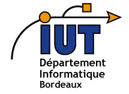

Hexaconf, le portail des condférences du Web
Vous êtes développeur, futur développeur ou simple geek curieux à propos des nouvelles technologies ? Alors vous êtes à la bonne adresse ! sur ce portail vous pourrez :
Evénement le mieux noté
BDX I/0 2015
BDX IO est l'occasion de réunir les artisans de l'économie numérique girondine, de leur proposer des interventions de qualité dans un cadre sympathique et convivial. Nous souhaitons apporter notre pierre à l'édifice de l'écosystème bordelais et étendre son rayonnement en France.
16 octobre 2015
2 Avenue du Docteur ALbert Schweitzer, 33400 Talence, France
Prochain événement
Créer en 2001, le forum d'Avignon est un think tank au service de la culture. A cette occasion à but non lucratif à plusieurs missions: Organiser annuellement les Rencontres internationnales entre les acteurs de la culture, de l'économie, des médias et ...
31 mars 2016 au 01 avril 2016
Bordeaux
avec
@Hexaconf
hexaconf@gmail.com